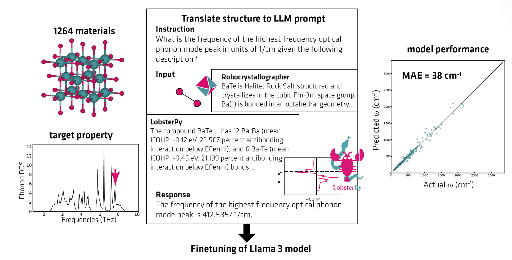
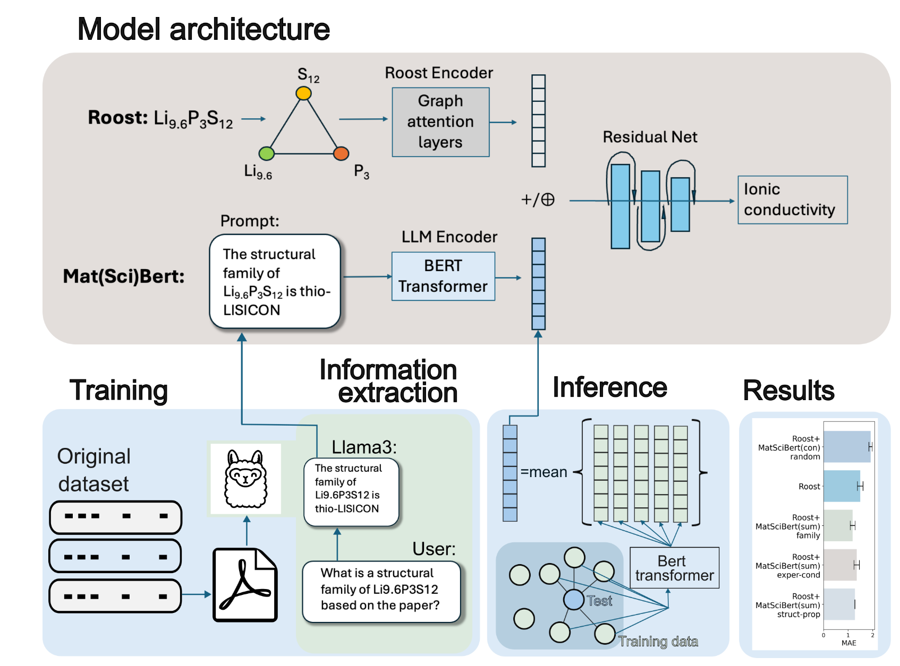
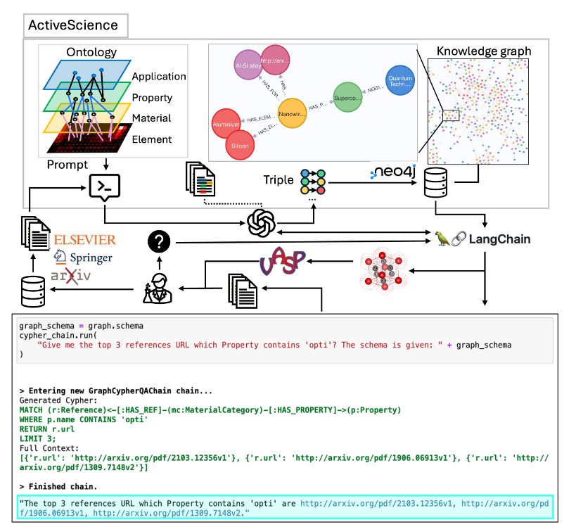
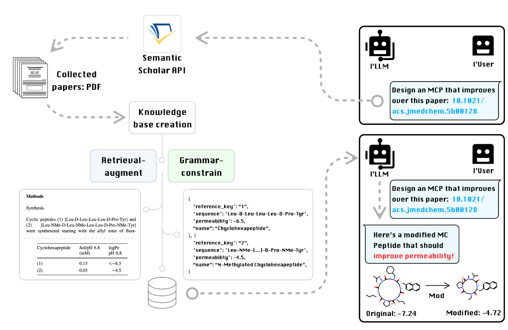
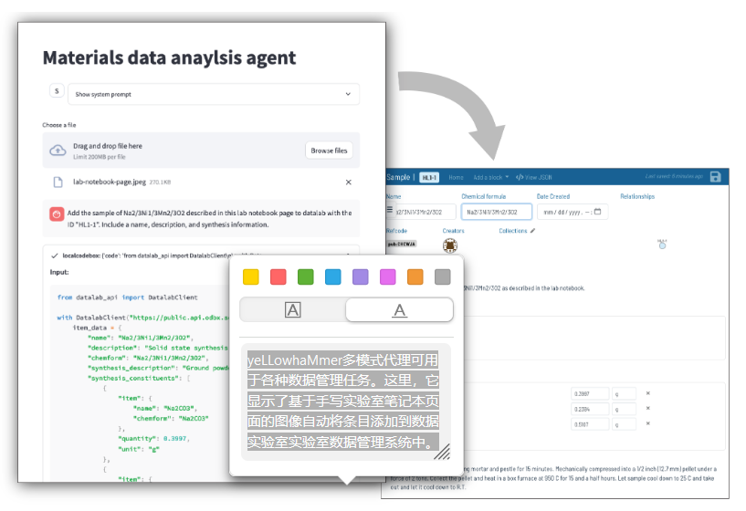
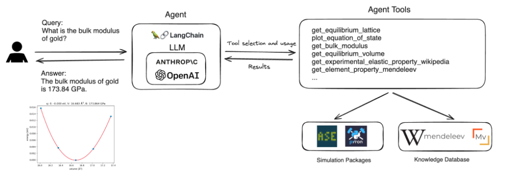

在当今科研竞争日益激烈的环境中，材料科学和化学领域的研究人员常常感到压力山大。传统实验方法耗时长、成本高，而计算模拟又需要专业知识门槛。当你日夜奋战在实验室，却发现国际同行已经提前发表类似成果时，那种挫败感想必让人窒息。如何在保证研究质量的同时提高效率？如何在海量文献中快速提取有价值的信息？大型语言模型(LLM)或许能为我们指明一条出路。
LLM黑客松：一场跨越全球的创新盛宴 🌏
近期，我阅读了这篇由Yoel Zimmermann、Adib Bazgir等多位研究者共同撰写的论文。这场黑客松活动吸引了来自全球556名参与者，最终有34支团队提交了完整项目。特别令人振奋的是，活动采用了线上线下混合模式，在多伦多、蒙特利尔、旧金山、柏林、洛桑和东京设立了实体中心，同时允许全球研究人员远程参与。
七大应用方向：LLM如何改变我们的科研方式 💡
论文中详细分析了七个关键应用领域，这些方向代表了LLM在材料科学和化学领域的最新进展：
此次活动突显了自去年黑客马拉松以来LLM能力的显著提高，表明LLM在材料科学和化学研究中的应用将继续扩大。这些结果表明，LLM具有双重效用，既是用于各种机器学习任务的多用途模型，也是用于科学研究中快速原型定制应用的平台。
深入剖析：核心技术与创新亮点
材料属性预测的突破与创新
在低数据环境下如何实现高精度预测，一直是材料科学的难题。论文中提到，通过结合传统键合分析与LLM的自然语言理解能力，部分团队在预测晶体结构声子密度时取得了显著进展。例如，Learning LOBSTERs：一个Llama模型使用Robocrystaller和LobsterPy文本描述进行了羊驼提示格式的微调，另一个模型仅使用Robocrystalger输入。这两个模型的性能（Robocrystaller:44 cm-1，Robocrystaller+LobsterPy:38 cm-1）与MatBench测试套件的其他模型相当，在撰写本文时，MAE的范围为29 cm-1至68 cm-1，这一改进不仅验证了文本信息在物理属性预测中的价值，也为低数据环境下的预测任务提供了新思路💡。

👆 示意图描述了使用Alpaca提示格式微调LLM的提示。
另一边，Context-Enhanced Material Property Prediction (CEMPP)则利用自动提取的实验条件与结构—属性关系，甚至引入人类专家提炼的文本信息，将某些材料的预测误差进一步显著降低。通过将材料组成的数值描述与领域专用文本嵌入相结合，LLM在低数据场景下表现出超越传统模型的潜力，这也提示我们，在数据稀缺的情况下，如何智能补全“隐性知识”成为一大研究热点。
通过提供自然语言输入和感兴趣的化学成分来改进基于成分的新型材料性能预测模型。在此过程中，我们利用大型语言模型（LLM）的能力来捕捉与组合相关的更广泛的上下文。

👆 模型架构和第二次实验的方案。材料成分用Roost编码器编码，附加信息用Llama3从引用的论文中提取，并用Mat（Sci）Bert编码。组合和LLM嵌入被聚合并通过残差网络投影头来预测属性。在推理阶段，取合成空间中5个最近邻的平均LLM嵌入。结果表明，添加不同类型上下文（从上到下）的MAE：添加随机上下文；不添加上下文；为化学和结构家族添加一致的结构化上下文（由人类提取的数据）；为实验条件和结构属性关系添加自动提取的上下文。
分子与材料设计：从理论到实践的跨越
材料设计一直是一个前沿而复杂的课题。黑客松中，诸如MC-Peptide利用LLM辅助设计宏环肽，为药物开发提供了新的思路；而MOF Innovators团队则利用检索增强生成（RAG）技术，从大量文献中提取设计规则，优化金属有机框架的带隙属性。这些案例充分展示了利用大语言模型进行反向设计、约束生成和优化调整的能力，同时也为可持续材料和绿色构建提出了技术支撑🎯。
MolFoundation利用QM9数据库，增强预先训练的大型语言模型（LLM）（如ChemBERTa和T5 Chem）对特定分子特性的预测能力。针对偶极矩和零点振动能量（ZPVE）等特性，我们的方法涉及用选定的数据集重新训练这些模型的最后一层，并微调嵌入以提高准确性。经过预测和性能评估，结果表明T5 Chem的表现优于ChemBERTa。此外，发现微调和预训练结果之间几乎没有差异，这表明可以避免计算成本高昂的微调任务。
自动化科研工具与自然语言接口
实验室中复杂的软件和繁琐的数据处理流程常常成为科研的瓶颈。通过构建基于自然语言的操作接口，像LangSim与LLMicroscopilot等项目，让研究者可以直接用口语化的指令完成DFT参数优化、显微镜操作等任务，极大降低了技术门槛。自动化工具不仅提高了实验效率，也为科研人员腾出了更多精力去思考问题本质，而这种跨界整合正是未来科研的重要发展方向🤖
科学传播、教育与数据管理
在科学传播与教育方面，MaSTeA致力于将复杂的材料科学问题转化为适合教学的内容，让LLM成为教师的得力助手；而LLMy-Way则通过自动生成学术报告和幻灯片，使得科研成果的传播更为高效。此外，针对科研数据管理，yeLLowhaMMer和LLMads等项目利用多模态数据整合、自然语言接口与自动解析技术，大幅提高了数据处理的自动化和智能化水平。这种从数据到知识的转换，将极大加速科学发现的过程📊。
假设生成与知识提取：激发科研灵感的新引擎
灵感常常来源于对海量文献信息的跨领域挖掘。论文中提到的Thoughtful Beavers，通过多代理协作和ToT框架，将复杂科学假设的生成与评估流程自动化，极大地拓宽了科研思维的边界。同时，ChemQA，KnowMat等利用LLM从文献中抽取结构化信息，构建知识图谱，使得科研人员能够更高效地检索和利用相关信息。这种知识提取与推理的能力，将为未来跨学科研究和新理论的发现提供强有力的技术支持🧠。
亮点项目：未来科研工具的雏形 ✨
对于人工智能方向可关注的几个项目：
🖥️ActiveScience整合了LLM、知识图和RAG，从科学文章中提取高级见解。该框架专注于材料科学研究，特别是合金，将提取的信息组织成Neo4j知识图，允许复杂的查询和发现。
问题：随着数据基础设施的发展，数据挖掘技术越来越加速了材料发现。然而，有三个重大障碍阻碍了这一过程：首先，数据的可用性和稀疏性是一个重大挑战。全面和高质量的数据集对于有效的数据挖掘至关重要，但材料科学的数据可用性有限。其次，每个数据库通常由特定类型的定量属性组成，这可能无法完全满足研究人员的需求。数据库的这种碎片化和专业化可能会阻碍突破性发现所需的整体分析。第三，科学家通常专注于某些材料和相关文章，从而降低了深入探索各种文献的可能性，这些文献报道了在其特定领域尚未使用的潜在材料或应用。这种孤立的方法进一步限制了发现和创新的范围。
基于Python的ActiveScience框架由三个关键功能组成：数据源API、大型语言模型和图形数据库。LangChain用于该框架内的下游应用程序。示意图管道如下图所示。值得注意的是，该框架不限于本演示中使用的特定包或API；还可以集成提供所需功能和输入/输出的替代工具。

👆ActiveScience架构及其潜在应用的示意图。演示LangChain使用的代码片段。
🧪 MC-Peptide项目展示了如何利用LLM构建端到端的工作流，通过语义搜索和约束生成来自动提取文献数据，从而设计具有增强渗透性的大环肽。这种方法不仅能应用于药物开发，更体现了LLM在结构化数据匮乏场景下的价值。
主要目标是根据推理过程产生新型MCP的建议，推理过程包括：（i）理解设计目标，（ii）收集相关科学信息，（iii）从论文中提取数据，以及（iv）基于提取的信息进行推理。MC-Peptide利用了LLM的进步，如语义搜索、语法约束生成和代理架构，最终产生了与参考设计相比具有增强预测渗透性的候选MCP变体。

👆本工作中实现的Pipeline。示例说明了用户请求，然后从语义学者API检索，并创建知识库。MCPs和渗透率从“A Detailed Investigation on Conformation, Permeability and PK Properties of Two Related Cyclohexapeptides“论文中提取。Pipeline以LLM结束，LLM建议对MCP进行修改，以提高其渗透性。
📊 yeLLowhaMmer项目开发了一个多模态的LLM代理，能够处理文本和图像指令，执行各种复杂的科学数据管理任务。它能读取手写实验笔记并结构化数据，这对于实验室数据管理是革命性的突破。

yeLLowhaMmer多模式代理可用于各种数据管理任务。这里，它显示了基于手写实验室笔记本页面的图像自动将条目添加到数据实验室实验室数据管理系统中。
💻 LangSim项目通过自然语言界面简化了原子模拟软件的使用，使研究人员能够用自然语言描述来执行模拟计算，而不必深入了解底层软件的复杂性。这大大降低了计算材料科学的入门门槛。

不要错过这场变革 🚀
看完这篇论文，我深刻意识到LLM正在彻底改变材料科学和化学研究的方式。作为科研人，我们应该如何应对这一趋势？
融合而非替代：LLM不应该被视为替代传统科研方法的工具，而是强大的补充。它们最大的价值在于加速实验设计、文献综述和数据分析等耗时工作，让研究人员能够将更多精力投入到创新思考中。
跨学科协作：黑客松比赛结果表明，当计算机科学专家与领域专家合作时，能产生最具突破性的应用。材料科学家和化学家应该主动寻求与AI研究人员的合作，共同开发适合自己研究领域的工具。
定制与开源：论文中多个项目强调了开源模型和定制提示的重要性。对于科研人来说，学习如何有效地使用和定制这些模型至关重要，特别是在处理专业领域知识时。
数据质量与伦理：随着LLM在科研中的应用增加，确保数据质量和遵守研究伦理变得更加重要。科研人员需要警惕模型可能产生的幻觉，并建立验证机制。
科研人应如何选择努力方向？
站在这次黑客松成果的肩膀上，我们不难看出未来科研的一些关键趋势和潜在方向：
- 融合传统与新兴技术
将传统的化学、材料学知识与大语言模型相结合，不仅能弥补数据缺失的短板，还能为理论模型提供全新的解释视角。未来可以更多关注如何通过领域特定的预训练与微调，实现更精准的预测与设计。
- 跨模态与多源数据整合
数据不仅仅局限于文本，图像、谱图、甚至语音数据都可以成为科研的重要信息源。如何设计高效的跨模态数据整合算法，将是提升科研效率的关键。探索自动化解析实验数据、构建知识图谱等方向，都有着巨大的应用潜力。
- 开放协作与自动化科研平台
黑客松展示了开放协作的巨大优势。未来的科研应更多依靠开放式平台，实现数据、代码、实验结果的共享，推动科研成果的快速转化。同时，自动化科研工具的开发，将使得科研流程更加标准化和高效化，为基础研究和应用研究之间架起一座桥梁。
- 智能教育与科研传播
科研的核心在于知识的传递与创新。利用LLM构建智能教育平台，既能辅助教学，又能将最新研究成果以更易懂的方式传达给大众，这将大大促进学术交流与社会进步。
未来展望：我们正站在科研范式转变的前夜 🌅
这场黑客松不仅展示了LLM在材料科学和化学领域的当前应用，也预示了未来科研方式的变革。随着DeepSeek,Gemini、ChatGPT、Claude和Llama等模型不断进步，我们可以期待更广泛的应用场景。
特别值得注意的是，基于RAG（检索增强生成）的应用正在兴起，这使LLM能够更准确地访问和利用专业知识。对于材料科学和化学这样依赖大量专业文献的领域，这一技术将带来革命性变化。
作为下一代科研人，我们需要做好准备，拥抱这些工具，将它们融入我们的研究工作流程中。正如论文结尾所言，LLM既是多用途的机器学习模型，也是快速原型设计的平台，它们的双重价值将继续重塑材料科学和化学研究的未来。